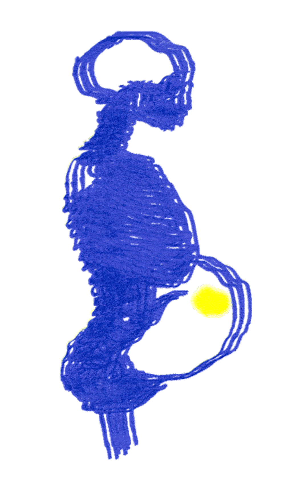

D'après les conditions de travail de la SGD, cinq points ressortent : l'auteur·trice, l'argent, le temps, l'engagement et le contact client·e. Voici une plateforme explorant nos subjectivités. Les liens personnels que nous faisons entre chacun de ces thèmes et notre exercice du métier de graphiste se mêlent et s'appuient parfois de textes.
Auteur·trice

De la Bolivie jusqu’en Russie, le voyage ne s’arrêtera jamais. Être indépendante et travailler en itinérance semblent les seules conditions à remplir pour que je travaille.
Au travers des processus de création artistique, nous tenterons ici de questionner le désir, dans son « en deçà », vers un « au-delà »...
En abordant l'expérience de la création artistique, nous sommes face à un matériau nourri par le penser autant que par le corporel.
Le processus créatif est intimement lié au corps. L'avènement d'une œuvre s'engendre et se fonde sur ce qu'il en est de plus archaïque, de plus sensoriel, sensuel, corporel : désirs de fusion, de sensation, désirs de satisfaction, de
toute-puissance.
Pour que la création devienne Création... pour que le désir devienne Désir... ce premier temps à fleur de peau devra inévitablement se doubler d'une mise en sens de la sensation !
La capacité à malaxer, à poser du sens sur l'archaïsme, le « primaire » mis en branle par les processus de création, questionne la relance inlassable du travail psychique : travail de penser, de mentalisation, de liaison, de re-présentation,
travail de symbolisation.
Ainsi, le corps à corps avec l'archaïsme, paradoxalement source inépuisable de création, et réserve de l'« incréable » selon une expression de A. Green (1992), s'accompagne d'un travail de modelage de la brutalité du matériau, de sa mise en
forme, de sa symbolisation, qui vise à représenter, par l'intermédiaire que constitue l'œuvre, le monde des sensations, l'expérience primaire, le noyau maternel, à représenter la relation au corps, mais grâce à une coupure avec elle.
Argent
Pourtant amoureux·ses des lignes, formes et couleurs, les graphistes se retrouvent à devoir faire vendre, à faire profiter le capitalisme lui-même. La perspective de vendre nous semble tellement naturelle que les graphistes ont elleux-même
commencé à se vendre. Les milieux culturels et éditoriaux n’offrant que peu de revenus, iels sont presque contraint·e·s à réaliser des visuels pour des entreprises, voire des multinationales. Notre temps qui était autrefois au service de la
conception, des idées est aujourd’hui au service des ultra-riches.
Temps
Les heures de vie devraient être respectées. Cependant dans le déroulement d’un projet, il est difficile de ne pas déborder sur des heures qui devraient être consacrées à notre bien-être. Souvent à cause de la découverte d’une nouvelle piste,
ou parce que la charge de travail s’annonce plus lourde que prévu.
Nous imitons, horreur! la toupie et la boule
Dans leur valse et leurs bonds; même dans nos sommeils
La Curiosité nous tourmente et nous roule
Comme un Ange cruel qui fouette des soleils.
Singulière fortune où le but se déplace,
Et, n'étant nulle part, peut être n'importe où!
Où l'Homme, dont jamais l'espérance n'est lasse,
Pour trouver le repos court toujours comme un fou!
Notre âme est un trois-mâts cherchant son Icarie;
Une voix retentit sur le pont: «Ouvre l'oeil!»
Une voix de la hune, ardente et folle, crie:
«Amour... gloire... bonheur!» Enfer! c'est un écueil!
Chaque îlot signalé par l'homme de vigie
Est un Eldorado promis par le Destin;
L'Imagination qui dresse son orgie
Ne trouve qu'un récif aux clartés du matin.
Ô le pauvre amoureux des pays chimériques!
Faut-il le mettre aux fers, le jeter à la mer,
Ce matelot ivrogne, inventeur d'Amériques
Dont le mirage rend le gouffre plus amer?
Tel le vieux vagabond, piétinant dans la boue,
Rêve, le nez en l'air, de brillants paradis;
Son oeil ensorcelé découvre une Capoue
Partout où la chandelle illumine un taudis.
Engagement
Un environnement de travail sain devrait conserver un équilibre entre une confiance de la part de la cliente et une écoute de la part de la graphiste.

Au travers des processus de création artistique, nous tenterons ici de questionner le désir, dans son « en deçà », vers un « au-delà »...
En abordant l'expérience de la création artistique, nous sommes face à un matériau nourri par le penser autant que par le corporel.
Le processus créatif est intimement lié au corps. L'avènement d'une œuvre s'engendre et se fonde sur ce qu'il en est de plus archaïque, de plus sensoriel, sensuel, corporel : désirs de fusion, de sensation, désirs de satisfaction, de
toute-puissance.
Pour que la création devienne Création... pour que le désir devienne Désir... ce premier temps à fleur de peau devra inévitablement se doubler d'une mise en sens de la sensation !
La capacité à malaxer, à poser du sens sur l'archaïsme, le « primaire » mis en branle par les processus de création, questionne la relance inlassable du travail psychique : travail de penser, de mentalisation, de liaison, de re-présentation,
travail de symbolisation.
Ainsi, le corps à corps avec l'archaïsme, paradoxalement source inépuisable de création, et réserve de l'« incréable » selon une expression de A. Green (1992), s'accompagne d'un travail de modelage de la brutalité du matériau, de sa mise en
forme, de sa symbolisation, qui vise à représenter, par l'intermédiaire que constitue l'œuvre, le monde des sensations, l'expérience primaire, le noyau maternel, à représenter la relation au corps, mais grâce à une coupure avec elle.